La barra que llena tu día.
Conectar el producto con los momentos cotidianos de Guadalajara, más allá del gimnasio.
Marketing · Comunicación · Diseño
Un nuevo impulso para la marca.
FIBO tiene las bases para competir. El reto es convertirlas en una marca relevante y un negocio sostenible.
Abre cada pestaña →
0 g
de proteína por barra.
0%
de presencia en 53 puntos de venta auditados.
● 36 con barra · ○ 17 sin barra
+0%
en facturación, enero–agosto 2026 vs. 2025.
$5.27 M → $5.91 M · cada bolita = $100 mil
0%
de margen bruto en 2026, frente a 42.5% en 2025.
● margen 2026 · ○ lo que se perdió
Cifras de facturación interna (venta bruta); margen preliminar con costo por validar.
FIBO tiene producto y distribución. El reto es recuperar relevancia, proteger la rentabilidad y construir una razón clara para elegirla.
Conectar el producto con los momentos cotidianos de Guadalajara, más allá del gimnasio.
Validar producto y claims, estructurar precios y proteger el margen.
Impulsar distribución, punto de venta, contenido, experiencias y e-commerce.
Escenario de inversión externa recomendado, sujeto a aprobación, más producto para activaciones.
Una estrategia para recuperar presencia y construir crecimiento rentable.
FIBO · Historia de marca 03 / Antecedentes
De la nutrición deportiva a una marca que busca conectar con la vida cotidiana.
El Molino crea su planta de barras para maquila y desarrollo de marca propia.
Nace FIBO BAR con una identidad centrada en el entrenamiento y la nutrición deportiva.
Colaboraciones deportivas, nuevos sabores y líneas, y entrada a cadenas como Nutrisa.
La actividad de marketing disminuye, las redes se enfrían y la identidad pierde consistencia.
Se consolida el portafolio de cuatro sabores y se define el concepto rector «Con FIBO te encuentras».
Periodos históricos sujetos a validación documental.
La marca no dejó de tener potencial. Dejó de construir sobre él.
FIBO conserva un producto con atributos funcionales, una operación propia y distribución activa. Sin embargo, la falta de gestión estratégica ha ampliado la distancia entre lo que el producto puede ofrecer y lo que la marca logra comunicar, vender y representar.
Las ventas crecen, pero la rentabilidad se deteriora y la operación depende de muy pocos clientes. La distribución permite sostener el volumen, pero no garantiza una demanda diversificada ni una relación directa con el consumidor.
+12.1% en ventas · Margen bruto: 42.5% → 37.2%FIBO está presente en puntos de venta, pero carece de materiales propios, exhibición diferenciada y comunicación constante. El consumidor puede encontrar la barra sin entender qué la hace relevante ni por qué elegirla frente a otras opciones.
68% de presencia en los 53 puntos auditados · 0 con material de marca en las fotos revisadasLa convivencia de diferentes identidades, nombres, precios y claims genera una experiencia fragmentada. Sin criterios comunes, el producto no siempre se presenta de forma coherente y algunas promesas requieren validación técnica y regulatoria.
2 logos · 4 denominaciones · 5 precios al públicoLa proteína se incorporó al consumo cotidiano y la competencia se diversificó. Los gramos de proteína ya no constituyen, por sí solos, una diferencia exclusiva; FIBO necesita articular sus atributos funcionales con una ocasión de consumo, una identidad y una razón de elección propias.
De suplemento deportivo a alternativa para la vida cotidianaLa evolución debe comenzar por ordenar y validar; continuar con una propuesta de valor diferenciada, y traducirse en presencia, comunicación y crecimiento rentable.
Pasa el cursor o toca cada carpeta · Cifras vinculadas a las fuentes del diagnóstico.
Relanzar FIBO para construir una marca relevante, generar demanda propia y crecer de forma rentable.
Fortalecer la marca, impulsar la elección y recompra del producto, ampliar las oportunidades comerciales y reducir la dependencia de pocos clientes mediante una gestión medible.
Mejorar distribución y rotación, recuperar clientes inactivos y desarrollar nuevos canales de venta.
Definir una propuesta de valor diferenciada y convertir el reconocimiento en consideración y elección.
Reactivar la comunidad, recuperar el comercio electrónico y medir el tráfico y las ventas atribuibles a campañas.
Validar costos, ordenar precios, asegurar información confiable y establecer un sistema de indicadores.
Revisiones mensuales y metas numéricas definidas a partir de líneas base verificadas.
Cada frente debe tener un responsable, un indicador, una fuente de información y un periodo de evaluación.
Propósito, posicionamiento, personalidad e identidad.
Validación técnica, calidad, atributos y promesas de comunicación.
Rentabilidad por canal, recuperación de clientes y diversificación comercial.
Visibilidad, exhibición, disponibilidad y rotación.
Contenido, comunidad, alcance e interacción.
Prueba del producto vinculada con oportunidades de compra.
Disponibilidad, fichas de producto, accesos y conversión.
Tablero de indicadores, líneas base, seguimiento y decisiones.
FIBO · Descripción de marca
FIBO es la marca propia de El Molino Aditivos Alimenticios, empresa ubicada en Zapopan que cuenta con una planta dedicada a la producción y maquila de barras.
Su principal diferenciador operativo es que cuenta con infraestructura propia para producir FIBO, con certificación de inocuidad FSSC 22000 y capacidad instalada de hasta 7 millones de barras al año.
FIBO ya tiene operación y distribución: el reto del proyecto no es empezar desde cero, sino fortalecer lo que existe y abrir nuevas oportunidades.
Mensaje clave: FIBO ya cuenta con producto, clientes y canales; ahora necesita consolidar su presencia y generar demanda que fortalezca su crecimiento.
“FIBO es una barra de proteína hecha en Jalisco, pensada para acompañar el día, no solo el entrenamiento.”
Definición propuestaFIBO se comunicaba principalmente desde el territorio de los suplementos deportivos y el entrenamiento.
Entre clases, en la oficina, durante un trayecto o después de entrenar.
FIBO combina un formato de 65 gramos con un alto aporte de proteína y fibra, diseñado para acompañar distintos momentos del día.
Portafolio actualFIBO · 09 / AnálisisHecha en Jalisco
FIBO concentra su oferta en una barra de proteína de 65 g, disponible en cuatro sabores con códigos de color propios para facilitar su identificación en el anaquel.
Mayor participación en el volumen surtido.
Lectura: Mejor potencial: crece y es el mejor calificado, pero no está en Nutrisa ni en Amazon.
Canal: 7-Eleven sí la compra; no está en Nutrisa ni ha llegado a Amazon.
El sabor con mayor margen estimado.
Lectura: En Amazon, 5 de 24 displays vendidos en el último envío.
Canal: 7-Eleven compra únicamente Cookies & Cream y Chocolate.

El más vendido entre los clientes atendidos directamente por FIBO.
Lectura: Público fiel: 32% de los displays en tiendas directas.
Canal: Fuerte en tiendas directas.
El sabor con menor margen estimado.
Lectura: Funciona en Nutrisa (mayor rotación, precio algo mayor). Tiene prueba de exhibición planeada.
Canal: Es el de mayor rotación en Nutrisa.
Precio promedio de venta: $23.82 MXNToca una barra para ver su análisisCostos por validar con Producción
01 · A primera vista
02 · Lo que hay detrás
×3 compras en un año
2 sabores: solo Cookies & Cream y Chocolate
−17% cae el resto de la cartera sin 7-Eleven
03 · Lo que dice el consumidor
Conclusión
Hoy el movimiento de sabores refleja la compra de un cliente más que el gusto del consumidor.
La prueba a ciegas y la encuesta dirán qué sabores impulsar, mantener o reformular.
⚠ Por conciliar: el FODA reporta +40% y +32% para Cookies & Cream y Chocolate (posible periodo distinto). La prueba de exhibición de Frutos Rojos está programada en 7-Eleven, que no compra ese sabor: confirmar tiendas.
Vida de anaquel: 18 meses.
La demanda cambia según el canal:
Porcentajes de barras surtidas, no necesariamente de las preferencias finales del consumidor.
Crear una ficha maestra para cada sabor con código de barras propio, tabla nutrimental, ingredientes confirmados, costo validado y fotografía oficial del empaque.
Con esta base, FIBO podrá registrar correctamente sus cuatro sabores en cada canal, mejorar el control del inventario y distinguir las preferencias reales del consumidor de las decisiones de compra de sus clientes.
65 g · 22 g de proteína — Para compra de impulso y consumo inmediato.
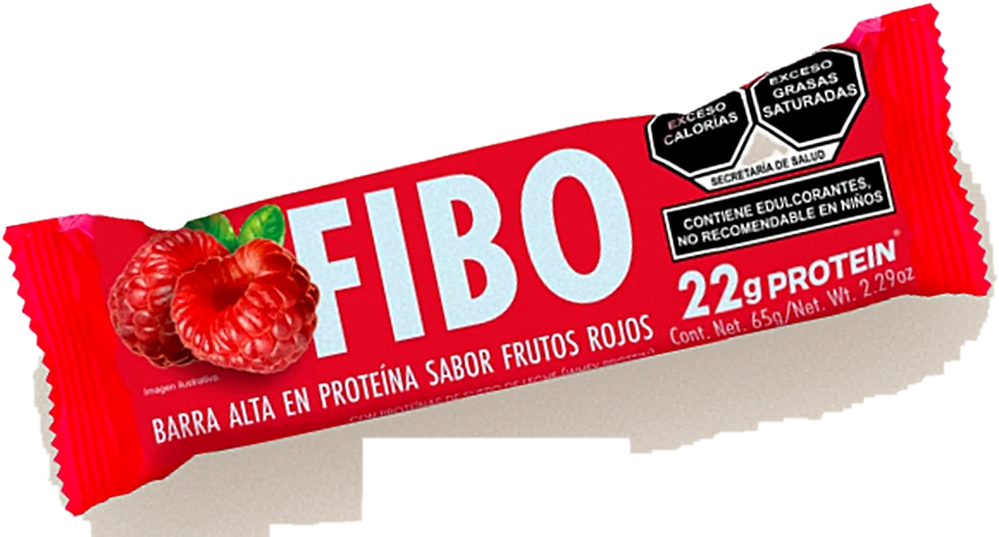
6 barras de un mismo sabor — Para tiendas y venta en línea.
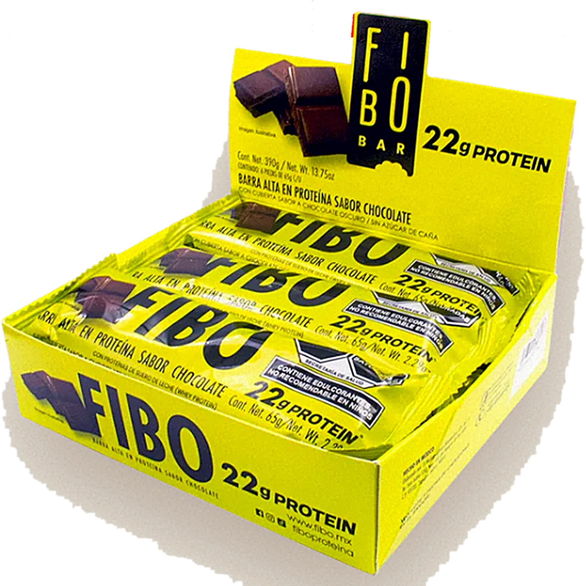
144 barras · 24 displays — Dirigida al mayoreo y la distribución.
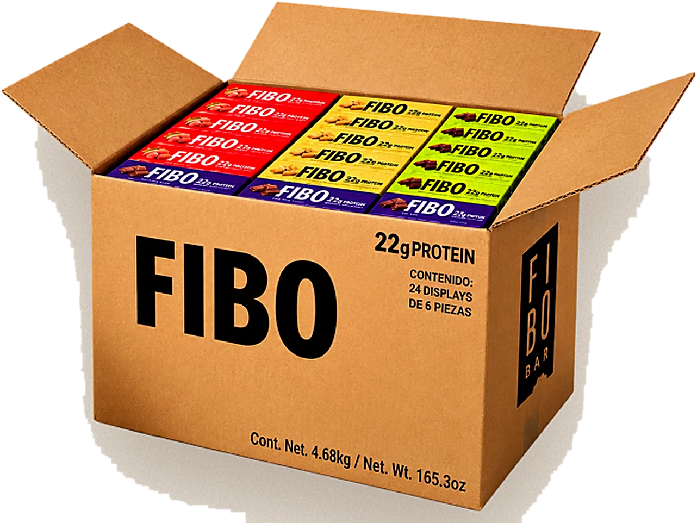
Tres presentaciones comercialesVida de anaquel: 18 meses
22 g de proteína · 10 g de fibra · 65 g
Detalles
Actualmente, FIBO comunica una promesa funcional: 22 gramos de proteína en una barra práctica y fácil de llevar. Sin embargo, la proteína por sí sola ya no basta para diferenciarla en una categoría donde muchas marcas ofrecen cantidades similares.
FIBO no necesita competir únicamente por gramos de proteína. Su oportunidad está en unir proteína, fibra, sabor y valor en una experiencia cotidiana, y convertir esa combinación en una marca con la que las personas conecten.
La combinación de proteína y fibra responde a la necesidad de una colación que ayude a calmar el hambre entre actividades.
Sus cuatro sabores inspirados en postres ofrecen una experiencia que va más allá de los atributos nutrimentales.
En la comparación de ocho barras realizada por el equipo, FIBO registró un costo de $2.16 por gramo de proteína, por debajo de varias alternativas importadas analizadas.
Es una marca hecha en Jalisco, con producción propia y una historia empresarial detrás del producto.
Una promesa funcional basada principalmente en el aporte nutrimental.
FIBO combina proteína, fibra y sabores disfrutables en una barra pensada para acompañar los momentos entre una actividad y otra.
El producto deja de hablar únicamente de nutrientes y comienza a formar parte de la vida cotidiana: una pausa, un antojo, un trayecto o un momento para ti.
Una barra de proteína que combina saciedad, sabor y practicidad, con una propuesta de valor accesible para acompañar el día.
Identificar qué pesa más al comprar FIBO: proteína, sensación de saciedad, sabor o precio.
Comprobar si la idea de una pausa rica en medio del día resulta relevante, auténtica y memorable para el público objetivo.
Validar qué atributos distinguen a FIBO de las alternativas y cuáles pueden convertirse en razones concretas de compra.
FIBO tiene más azúcares y calorías que algunas alternativas, mientras que otras destacan por sus ingredientes o por no tener sellos de advertencia. Su diferenciación debe construirse sobre sus atributos reales, no sobre una promesa de superioridad saludable.
Modelo comercial B2B
El Molino factura principalmente a clientes comerciales que compran el producto para revenderlo o distribuirlo. Por eso, los ingresos de FIBO dependen directamente de las compras de sus clientes, mientras que la venta al consumidor final ocurre principalmente a través de terceros.
Ejemplo ilustrativo con un precio al consumidor de $50 MXN.
El Molino recibe en promedio $23.82 por barra. Después de un costo de producción estimado de $14.39, quedan $9.43 de margen bruto, antes de otros gastos operativos y comerciales.
Rentabilidad y vulnerabilidades del modelo
El modelo enfrenta tres riesgos que afectan su estabilidad y rentabilidad.
Prioridades para fortalecer el modelo
Conclusión: el reto de FIBO no es únicamente vender más, sino construir un modelo comercial más rentable, diversificado y capaz de sostener su crecimiento.
La cadena comercial de FIBO
01 · Origen
*En Nutrisa, falta confirmar quién realiza el abastecimiento directo a las tiendas.
Después de la compra
Lo que factura El MolinoLo que se vende en cada tienda
2,442 piezas en el centro de distribución de Nutrisa105 tiendas en cero3 tiendas 7-Eleven visitadas, agotada
0 materiales FIBO en los puntos visitadosAcuerdos pendientes
FIBO ya tiene distintas vías para llegar al mercado; el reto es conectar esas vías con la disponibilidad y la venta real al consumidor.
Canales actuales
Algunos funcionan y crecen; otros están detenidos o tienen problemas que se pueden resolver con relativa rapidez.
Es el canal que más ha crecido y el que explica buena parte del aumento en ventas del año. En el recorrido, la barra estaba en 35 de las 45 tiendas visitadas. Se vende en promedio a $51 y la cadena solo compra dos sabores: Cookies & Cream y Chocolate.
Retos · ninguna tienda con material propio · tres tiendas agotadas · solo dos sabores · compite en el mismo anaquel con Wild Protein, que tiene exhibidores propios, y con 7-Select, la marca propia de la cadena, a la mitad del precio.
Maneja tres sabores y no tiene Cookies & Cream. Frutos Rojos, el sabor más débil en otros canales, aquí es el que más rota, aunque se vende un poco más caro: $49.
Retos · 2,442 piezas en su centro de distribución mientras 105 tiendas están en cero · falta Cookies & Cream · la barra está registrada en su sistema como «FOBO BAR».
Lleva a FIBO a tiendas naturistas, abarrotes, carnicerías, escuelas, gimnasios y otros negocios de Guadalajara. Los gimnasios son los que más venden por punto y el Country Club es el número uno de toda su cartera.
Oportunidad · activar los puntos faltantes · priorizar las zonas de mayor potencial · desarrollar el segmento de carnicerías.
Es el canal más cercano al público deportivo, aunque también el que paga el precio más bajo por barra entre los principales clientes.
Un canal pequeño que también forma parte de la distribución.
En línea la situación es la más débil: el canal está prácticamente detenido. El detalle está más abajo.
Fuente: Puntos de venta FIBO (Notion, 18 oct 2026). Los puntos de Más Natural Más Sano van en su ubicación exacta. 7-Eleven, Nutrisa y Farmacias del Ahorro se muestran agrupados por municipio, porque la base solo tiene su dirección.
Mapeo 7-Eleven · recorrido de campo
La barra está, pero revuelta: sin espacio propio, sin material y con sabores incompletos.
Toca la pila para ver la siguiente foto
Incluye las 130 tiendas Nutrisa del inventario nacional cargado en Notion; el inventario completo de 246 tiendas no está en la base.
¿Dónde está la mayor oportunidad de crecimiento?
puntos potenciales: en la red de Más Natural Más Sano, 137 tiendas de las mejores categorías todavía no venden FIBO.
La mitad de la oportunidad se concentra en estas cuatro zonas. Tócalas para verlas en el mapa.
Mayor venta totalAbarrotes$159,510enero a septiembre
Mayor venta por puntoGimnasios$14,600promedio por punto
Número uno de la carteraCountry Club$35,100Más Natural Más Sano
Segmento menos explotadoCarnicerías34puntos de alto nivel sin FIBO
E-commerce
5 Chocolate2 Brownie0 Frutos RojosSin vender
Del último envío de 72 displays solo se vendieron siete, y Cookies & Cream nunca se envió. Además, revendedores como Fitstore y Savesta venden la barra en la misma página, compitiendo con la propia marca.
Nadie del equipo tiene acceso a la cuenta, y ahí solo es rentable vender paquetes de más de 299 pesos.
Cuando tiene producto, vende el display de seis barras a 258 pesos, unos $43 por barra.
No es un canal actual
Farmacias del Ahorro a veces se menciona como canal actual, pero no lo es: en el recorrido no se encontró FIBO en ninguna de las tres sucursales visitadas. Debe tratarse como una oportunidad de expansión.
FIBO tiene canales reales y con potencial, pero ninguno está trabajado a fondo: en las cadenas falta exhibición y surtido completo, en los distribuidores hay puntos sin abrir y en línea el canal está prácticamente detenido. Ordenar los canales actuales puede generar crecimiento antes de abrir canales nuevos.
$34 M de venta bruta desde abril de 2019, sin estrategia de marketing ni inversión publicitaria. 106 clientes en ese periodo; hoy siguen activos 28.
0Mene–ago 2025
0%creció 2026: $5.91 M
de enero a agosto
0barras surtidas,
casi 10% más
*Todas las cifras son venta bruta.
El costo por barra sube más rápido que el precio. FIBO vendió más pesos, pero ganó $42,782 menos que el año anterior. El peor mes fue julio: el margen cayó de 45.6% a 29.9%.
0%costo por barra
$12.90 → $14.39
0%precio de venta
$22.45 → $22.92
Margen bruto42.5%37.2%
Problema 02 · Concentración
En línea, el mismo patrón: Amazon generó $209 mil y 434 pedidos entre mayo de 2025 y septiembre de 2026. Hoy está en cero.
El reto del relanzamiento no es solo vender más, sino vender mejor: con precios que protejan el margen y una base de clientes y canales más diversificada.
El producto funciona, la barra se vende y la planta tiene capacidad de sobra, pero nadie gestiona la marca de forma integral. Los problemas no vienen de una falla de origen, sino de años sin dirección. Se agrupan en seis.
El centro (0) es ausencia del problema; cada esquina (100%) es el problema completo. Cada eje usa un dato real del diagnóstico.
Ejemplo: 87 de los 105 clientes no tienen correo registrado, por eso «Información» llega a 83%.
Ninguno de estos problemas es de producto ni de nombre, y todos tienen solución.
Solo sobre esa base tendrá sentido invertir en que más gente conozca la marca.
Definición de la categoría
En México no existe una definición legal: cualquier barra puede llamarse «de proteína», aunque tenga 3 gramos. Por eso usamos una propia: una barra proteica aporta al menos 15 g de proteína por pieza y al menos 20% de su energía viene de la proteína.
FIBO · 22 g≈37% de su energía viene de la proteína
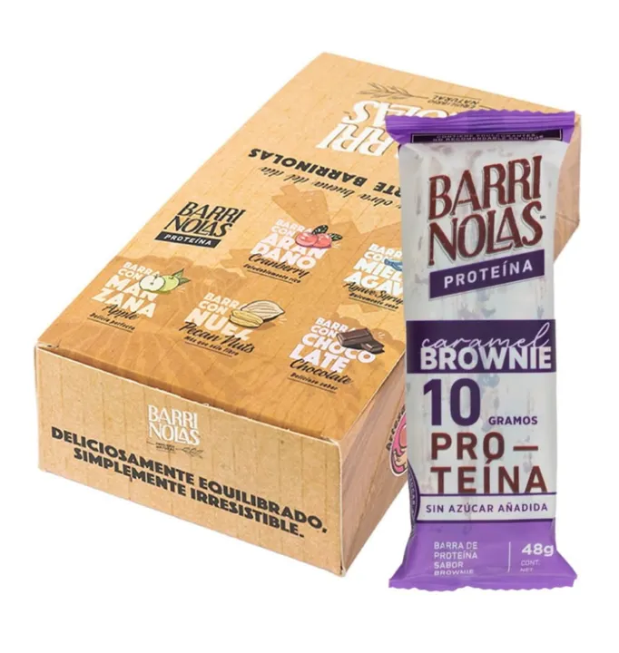
3.3 gBarrinolas avena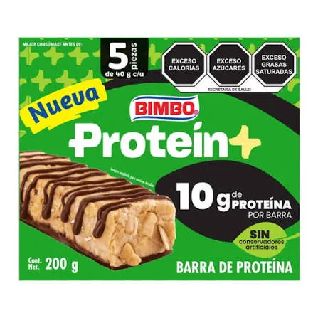
≈10 g7-Select · Bimbo Proteína+Franja azul: Profeco encontró que la mayoría de las barras comerciales aporta 8–12 g por pieza.
FIBO está en un punto poco común: tiene la proteína de las premium, pero un precio intermedio.
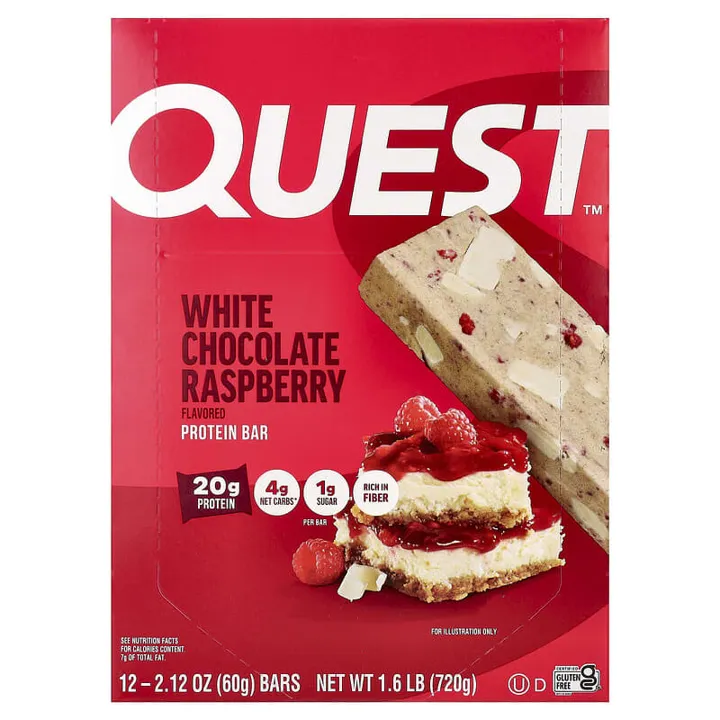
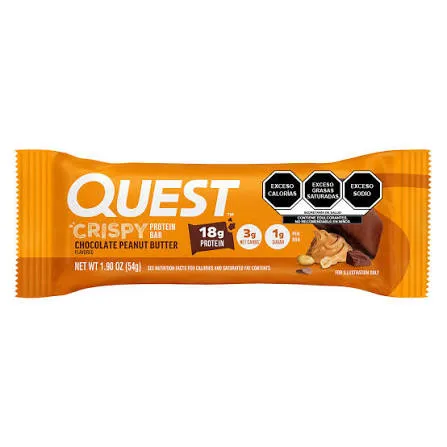
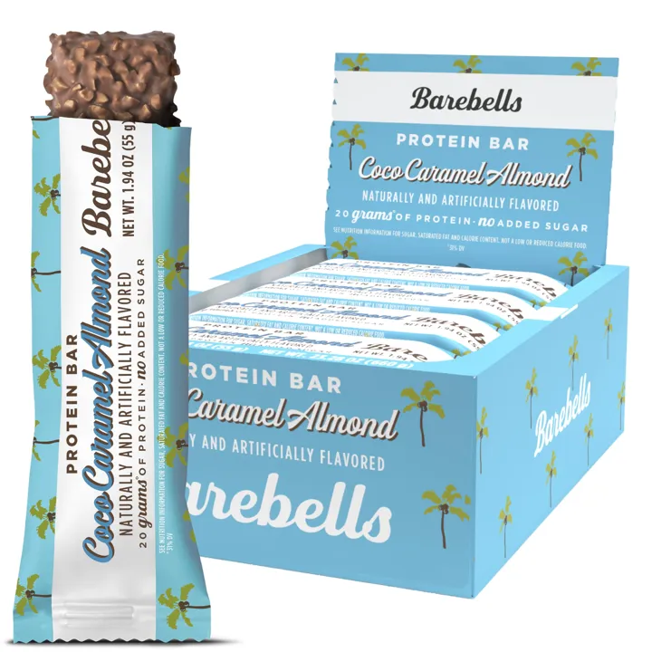
20 gramos o más de proteína, casi siempre importadas, como Quest o Barebells. Cuestan entre $55 y más de $100.
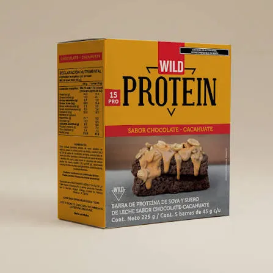
10 a 15 gramos y precios de $15 a $37. Dominan el anaquel de conveniencia.
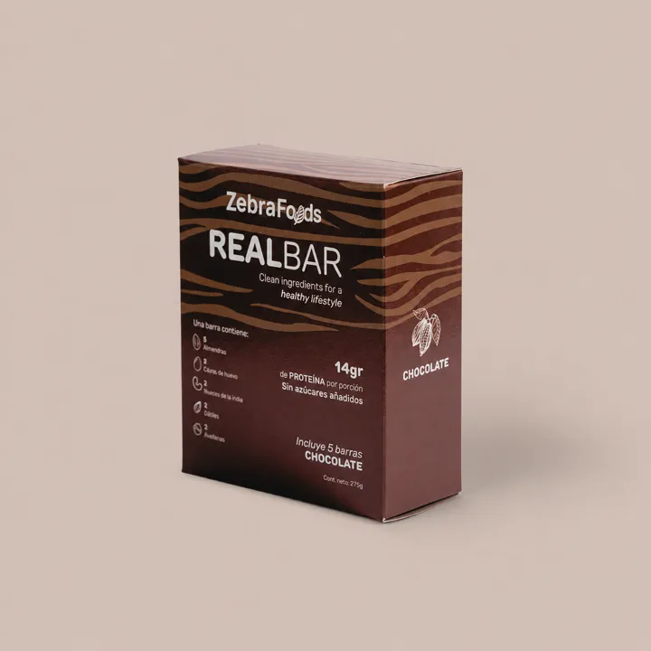
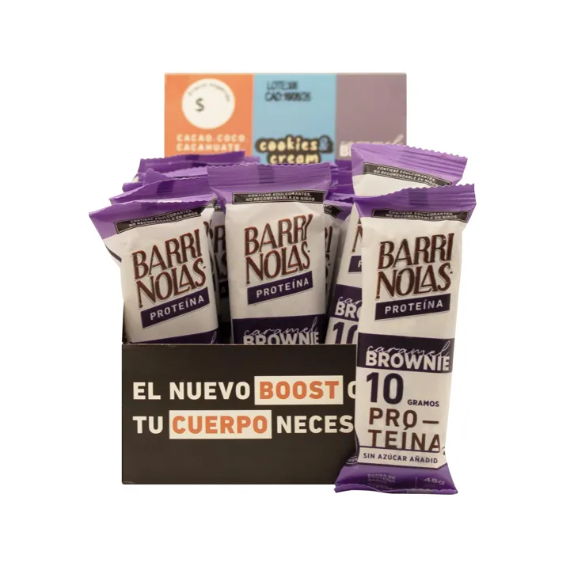
Priorizan ingredientes naturales y la ausencia de sellos, con cantidades medias de proteína.
Desde la NOM-051, publicada en marzo de 2020, los alimentos llevan sellos de advertencia al frente.
Sellos de advertencia al frente del empaque.
Con sellos, no se puede destacar «alto en proteína» de forma protagónica al frente.
Exceso de calorías y de grasas saturadas. Es lo más común: cerca del 40% de las barras analizadas tiene dos.
Cada vez más marcas usan «sin sellos» como argumento de venta.
Los productos con sellos no se pueden vender en escuelas, incluidas preparatorias y universidades.
Para el consumidor no se trata de elegir entre barras, sino de elegir qué comer entre comidas: yogur, bebidas de proteína, pan dulce, galletas y botanas.
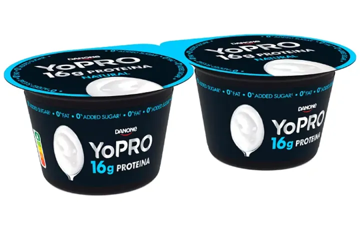
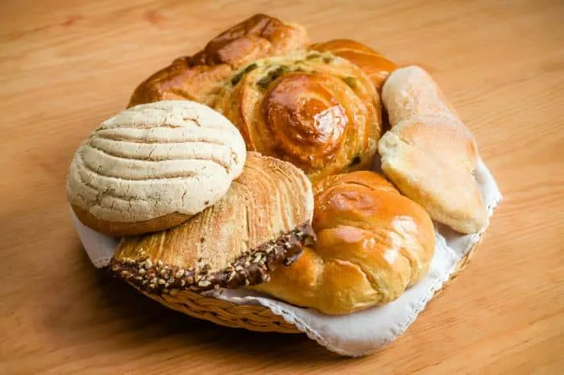
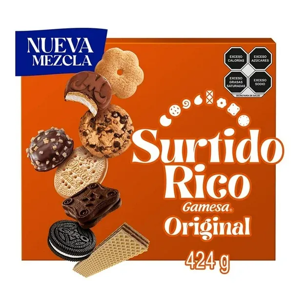
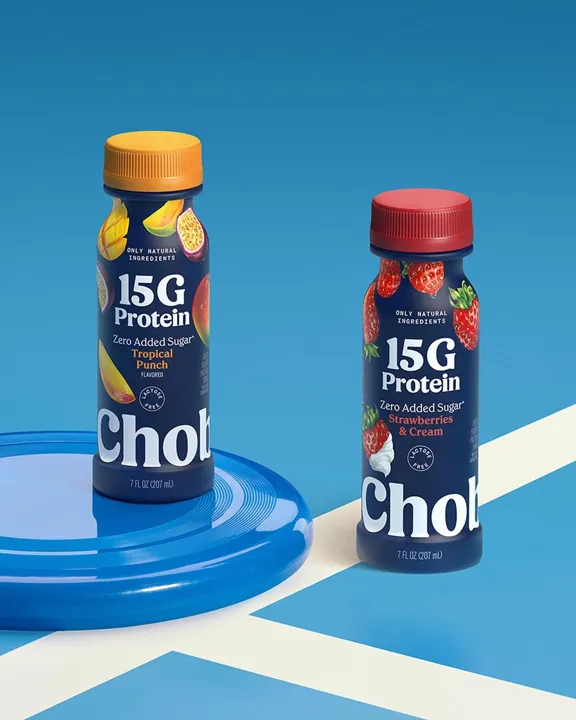
Así se ve el anaquel
Recorrido en tiendas 7-Eleven de Guadalajara: barras de proteína, granolas, galletas y pan en el mismo espacio.
Toca la pila para ver la siguiente foto
El espacio de partida
En el anaquel de conveniencia, donde se vende la mayor parte de FIBO, no hay otra barra con 20 g de proteína o más que cueste $50 o menos.
Advertencia: algunos estudios, como el de Grand View Research (467.5 millones de dólares), usan una definición mucho más amplia de la categoría. No conviene compararlos con las cifras de FIBO.
✷Tamaño del mercado
Según IMARC Group, la fuente recomendada, las barras de proteína en México valían 59.8 millones de dólares en 2025: unos $1,100 millones de pesos al año (a $18.50 por dólar).
FIBO vende unos $8.9 millones de pesos al año a sus clientes: cerca del 0.8% del mercado. Con el precio que paga el consumidor, sube a alrededor de 2%. Son estimaciones propias, útiles como orden de magnitud.
crece la categoría cada año en promedio, según IMARC: de $59.8 M a $89.9 M de dólares en 2034.
creció FIBO este año, bastante más que el mercado.
de participación, como máximo: hay un espacio muy amplio para crecer sin que el mercado se expanda.
creció el yogur alto en proteína de Danone. Bimbo y Lala ya lanzaron productos con proteína para el día a día: más personas la buscan, y llegan más competidores con más recursos.
FIBO paga IEPS de 8% por tener más de 275 calorías por cada 100 g. Existe una propuesta para subirlo a 20%: encarecería la barra en una categoría donde el precio pesa mucho.
Ojo: el crecimiento de FIBO viene casi por completo de un solo cliente, así que no se puede leer como una ganancia sólida de participación.
Cómo leer las cifras
Seis tendencias están cambiando la forma en que los mexicanos comen entre comidas. Algunas juegan a favor de FIBO; otras le exigen ajustes.
Expediente 06 · 2026
N_01
DATO CLAVE
Fuente:
El joven activo en tránsito de Guadalajara: el segmento con más tamaño, el que mejor encaja con la nueva dirección de la marca y el que compra donde FIBO ya está.
Se puede extender hasta los 35. Trabaja, o estudia y trabaja, y pasa buena parte del día fuera de casa.
Cerca de 1.1 millones de personas de 18 a 29 años viven en la zona metropolitana de Guadalajara.
Trabaja unas 41 horas a la semana y dedica cerca de 79 minutos al día a trasladarse.
Gana en promedio $33.80 por hora: una barra de $50 equivale a hora y media de trabajo.
7-Eleven y OXXO, cerca de estaciones, universidades y oficinas; también cafeterías y gimnasios.
Un día de Ana · 07:00 a 21:00
0minutos al día en traslados
0de ellos en camión o Macrobús
0de trabajo a la semana
Muchos combinan trabajo, estudio y, cada vez más, ejercicio: Smart Fit tiene más de 1.3 millones de usuarios en México, la mayoría de 20 a 35 años. Aun así, la falta de tiempo es la principal razón para no hacer ejercicio.
Tamaño · ZMG
18 a 29 años · ≈1.1 M12 a 17 años
Cada punto ≈ 10 mil personas · IIEG con datos de CONAPO. Además, más de 330 mil estudiantes de educación superior en Jalisco.
Trabajo · 20 a 24 años
Participación en el mercado laboral · ENOE. La proporción sube después de los 25.
Precio · poder adquisitivo
Precio hoy $50Aceptable para comprar seguido $35–40hipótesis
Tres barras por semana ≈ una décima parte de su ingreso mensual. Salario mínimo 2026: $315.04 diarios. Foco: ingreso propio arriba del promedio, NSE C y C+.
Decisión de compra · hipótesis
Orden relativo según la investigación; el largo de las barras no es un porcentaje medido.
Lo que ve en el anaquel
Restricción: desde 2025 los productos con sellos no se venden dentro de preparatorias ni universidades. A los estudiantes hay que alcanzarlos fuera del campus.
Ana · 24 años
Estudia y trabaja. Sale de casa a las 7 de la mañana y regresa a las 9 de la noche. Busca algo que le quite el hambre, que se le antoje y que no sea pan. No conoce FIBO, pero si la ve, la prueba.
Antes de cerrar el perfil, la encuesta debe confirmar
Necesidades, motivaciones y barreras
La proteína hace que alguien voltee a ver una barra.
El sabor y el precio deciden si la compra.
La textura decide si la vuelve a comprar.
La necesidad
Busca llenarse y, si entrena, recuperarse.
Es la principal razón para no hacer ejercicio (MOPRADEF), y empuja a comer algo práctico en el camino.
creció el yogur alto en proteína de Danone: ya no es exclusiva del gimnasio.
Proteína por pieza
Los consumidores la describen como «llenadora».
Lo que lleva a elegir una marca
del crecimiento en ocasiones de snacks viene de las que se eligen «por el sabor» (Kantar). La mitad de los mexicanos come botanas porque saben bien (Innova).
FIBO$50
Las que más ve$25–37
En conveniencia se mide por pieza, no por gramo. Por gramo de proteína FIBO sale bien frente a las importadas (≈$2.27 por gramo).
de los jóvenes de 20 a 29 años considera importante al menos un sello (INSP). La mitad de los consumidores lee las etiquetas con más atención que antes.
No existe en México un estudio de cuánto está dispuesto a pagar el consumidor por una barra de proteína. Hipótesis interna: $35–40 para comprarla seguido. A $50, para un joven de ingreso medio, FIBO es una compra ocasional.
Dudas que FIBO debe poder responder
Toca una pregunta para ver la respuesta.
FIBO ya resuelve la necesidad de fondo.
Es una barra que llena y tiene más proteína que la mayoría. Lo que hoy la frena depende de ella misma:
La encuesta y la prueba de sabor confirmarán cuál pesa más.
0 MIN/DÍA EN TRASLADOS
Ocasiones de consumo
El día del joven tapatío está hecho de trayectos, clases, jornadas largas y, cada vez más, ejercicio. Cada momento es una oportunidad para la barra, y después un territorio creativo de «Con FIBO te encuentras».
Algo que se coma en la mano, sin refrigerar y sin ensuciar.
02 · prioridad 1Entre clasesClases largas y hambre a media mañana.
03 · prioridad 1En la jornada laboralEl hambre de media mañana o media tarde, sin salir de la oficina.
04 · prioridad 2Después de entrenarLa ocasión con mayor intención de compra.
05 · prioridad 3Snack entre comidasCompite contra el pan dulce y la botana.
06 · prioridad 4Viajes y recreaciónEn el camino, la caminata o el día de campo.
Viajes diarios por modo · Encuesta Origen-Destino 2023
Dónde estar: tiendas de conveniencia junto a las estaciones
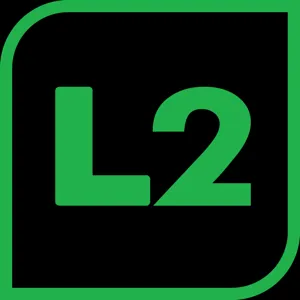
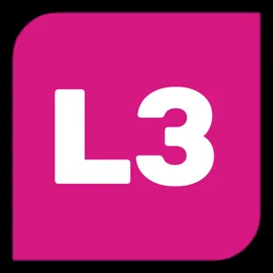
Insight En la zona Centro, la de más tránsito, la cobertura de FIBO fue de las más altas del recorrido.
El grupo de edad más numeroso de la zona metropolitana es el de 15 a 24 años.
Condición: desde 2025 los productos con sellos no se venden dentro de las escuelas. FIBO debe estar en las tiendas de enfrente y en las paradas que llevan a ellas.
Las tiendas de enfrente de
41.8 hpromedio semanal en México
México es el país que más horas trabaja de la OCDE. Con la reforma: menos horas, pero más concentradas.
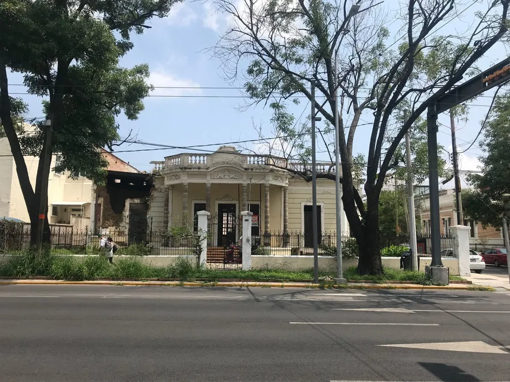
Insight Justamente en Andares, el personal de 7-Eleven no conoce la barra.
Vía RecreActiva · cada domingo
100–300 milpersonas cada domingo, según la fuente
73 kmde calles
✓el municipio permite activaciones con solicitud previa
0de los adultos en ciudades hace actividad física en su tiempo libre
1.3 Musuarios de Smart Fit en México
0gimnasios a los que llega FIBO a través de Edgar García
Solo el 23% de los mexicanos dice no comer entre comidas. La media tarde es el momento favorito para los snacks.
Compite contra
Insight En Más Natural Más Sano, los abarrotes son el negocio que más vende FIBO, y las carnicerías la oportunidad menos explotada.
+33 Mvisitantes recibió Jalisco en 2025
13.3 Mse concentraron en Guadalajara
Las escapadas de fin de semana son parte de la vida tapatía. FIBO puede estar en tiendas de carretera, gasolineras y en paquetes en línea para llevar.
Para priorizar
FIBO no es solo para el gimnasio, sino para los momentos reales de la ciudad. Esa es la base de los territorios creativos de la marca.
Proceso de compra · 7 etapas · en cada una FIBO puede ganar o perder al consumidor
01 · Descubrimiento
FIBO hoy · débil11 meses sin publicar. 0 de 27 fotos de anaquel con material de la marca. En algunas tiendas el personal no conoce la barra.
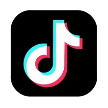
02 · Comparación
El riesgoSi no queda claro en un segundo por qué cuesta más, la comparación se pierde.
Ilustrativo. Precios de 7-Select, Wild Protein y FIBO del recorrido; los de pan, galletas y avena son referencia.
03 · Evaluación de precio y beneficios
FIBO hoyNo lo comunica en el punto de venta, y se vende en cinco precios distintos según el canal.
04 · Disponibilidad
32%de los puntos visitados no tenía FIBO
100+sucursales de Nutrisa en cero
0cadenas con los cuatro sabores
✕no está en OXXO
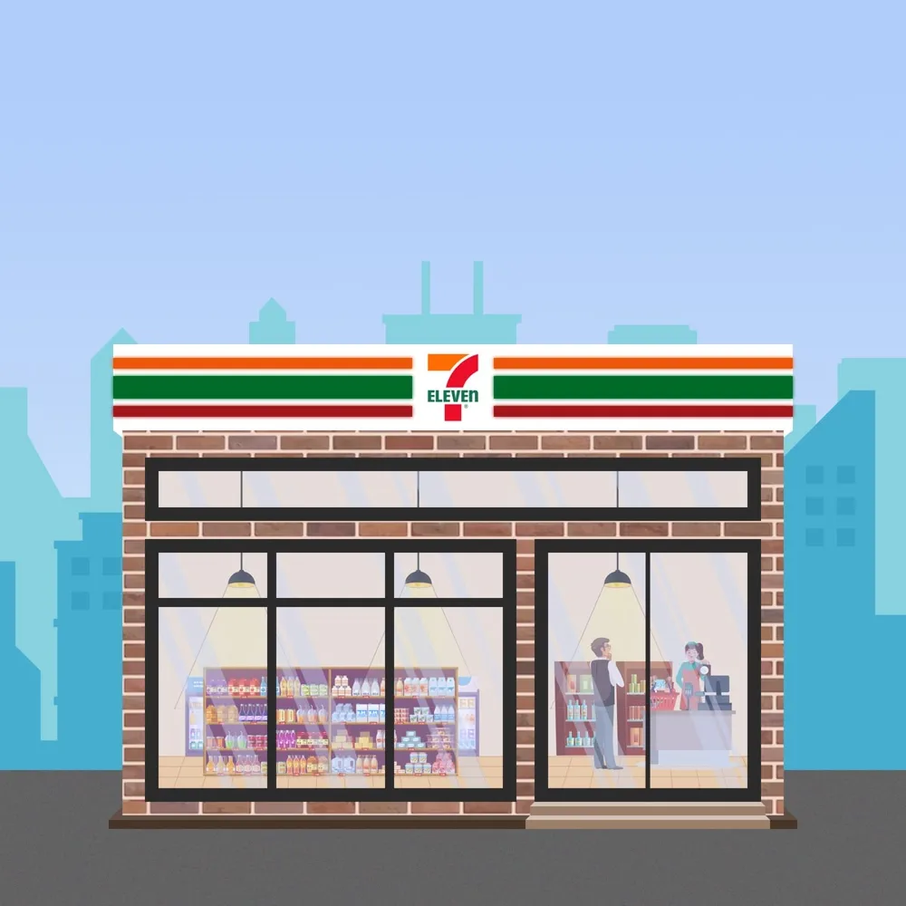
AGOTADO05 · Compra
7-ELEVEN · CAJA 2
Café$32.00
FIBO 65 g$51.00
Tiempo de decisión3 s
06 · Evaluación del sabor · el momento decisivo
La textura pesa tanto como el sabor.
Sabores de postre
Llena
«Reseca» · la queja más repetida
Podría empeorar mientras más tiempo pase la barra en el anaquel.
07 · Recompra y recomendación
FIBO hoyNo mide la recompra, no tiene sistema de reseñas ni de seguimiento, y 87 de 105 clientes no tienen correo registrado.
Pocos la conocen
No siempre está en la tienda
No se entiende por qué cuesta más
La textura puede decepcionar
Una campaña puede generar interés, pero si la barra no está, no se ve o no convence, ese interés se pierde.
El largo de cada fuga es ilustrativo: muestra el orden del recorrido, no un porcentaje medido.
Investigación primaria
Hasta hoy todo lo que sabemos del consumidor viene de fuentes indirectas. FIBO no ha hecho una investigación propia: primero, lo que ya dicen en línea; después, el diseño para confirmar o corregir las hipótesis.
≈430 calificaciones públicas. Para dimensionarlo:
FIBO · total≈430
Wild Protein · 1 listado en ML360
Quest · 1 barra en Amazon13,000+
Cada cuadro = 100 opiniones.Calificación promedio en tiendas en línea.
Toca las hojas para pasar a la siguiente. Temas resumidos de las reseñas públicas, no citas textuales.
Opiniones sobre… EL SABOR
Lo que más destacan los comentarios positivos es el sabor: les gusta y lo recomiendan.
a favorOpiniones sobre… LA PROTEÍNA
Valoran la cantidad de proteína y que la barra sirve para entrenar.
a favorOpiniones sobre… LA TEXTURA
La queja que más se repite: que está «algo seca».
en contraOpiniones sobre… EL HAMBRE
Para algunos no quita el hambre, y el sabor no convence a todos.
en contraOpiniones sobre… EL PRECIO
En Mercado Libre se percibe bien. En Amazon cuesta $58 a $65, contra $43 en fibo.mx.
depende del canalRiesgo en… LA COMUNICACIÓN
Algunos listados dicen «22 g de proteína whey», cuando es principalmente de soya, y «sin azúcar añadida», aunque lleva jarabes.
corregirSon pocas opiniones, vienen solo de compradores en línea y no representan al consumidor de 7-Eleven: sirven para plantear hipótesis, no para sacar conclusiones.
Esquema mixto: universidad aliada para la prueba de sabor y las entrevistas, y panel en línea para la encuesta.
400 jóvenes de 18 a 35 años en la ZMG y 100 usuarios de gimnasio. Cuotas por edad, sexo, municipio y ocupación. Incluye precio aceptable con Van Westendorp.
Primero a ciegas y luego con la marca a la vista. Mide agrado, dulzor, textura y sequedad.
A la salida de tiendas 7-Eleven y de gimnasios.
Diez entrevistas a profundidad.
Prueba del empaque y de lo que comunica.
«Con FIBO te encuentras» contra el mensaje funcional.
Definida desde antes de levantar la investigación.
Simenos del 15% reconoce la marca→la prioridad será la visibilidad
Siel precio aceptable queda por debajo del actual→ajustar el precio por canal
Siun sabor queda bajo el nivel de agrado→reformular o retirar
Simás de 1 de cada 5 la encuentra demasiado seca→trabajar la textura con Producción
Si«Con FIBO te encuentras» no supera al mensaje funcional→replantear la comunicación
Costo estimado
$90–120 milpor cotizar con proveedoresCalendario · 2026
A tiempo para ajustar precio, mensajes y sabores antes de la temporada de propósitos de año nuevo.
Panorama competitivo
01 · DirectoOtras barras de proteína en el mismo anaquel.
02 · Por el momentoTodo lo que podría comer en lugar de una barra: yogur alto en proteína, pan dulce, una galleta. Mucho más grande y, en conveniencia, probablemente más difícil.
Dentro y fuera de las barras · toca cada grupo
Posiciones aproximadas con los rangos del análisis. Toca cada círculo.
Las cuatro amenazas principales
El cliente más grande de FIBO vende su propia barra en el mismo anaquel, a la mitad del precio.
Distribución en todo el país y una marca que todos conocen. Lanzada en abril de 2026.
Chilena, recibió 25 millones de dólares para crecer en México. La más visible en conveniencia, con material propio y «sin sellos».
Acostumbran al consumidor a buscar proteína fuera de las barras.
En resumen
Ganar por precioGanar por etiqueta limpia
Mucha más proteína que las accesibles, a menor precio que las importadas, en una barra que llena. La condición: que se entienda en un segundo frente al anaquel.
(36 referencias · una sola medida)
La medida
No todas las barras tienen la misma proteína. Por eso se comparan con una medida común.
Se registróMarcaProteínaPesoPrecio por piezaPrecio por paqueteCanalFecha
La regla · pesos por cada 10 g de proteína
fibo.mx$19.55
Misma barra, cuatro precios. En Amazon FIBO cuesta 44% más que en su propia tienda y queda cerca de Quest o Barebells.
Siete referencias salen más baratas por gramo. Varias son barras masivas de 10 g que cuestan poco por pieza, pero tienen menos de la mitad de proteína que FIBO.
La misma barra cuesta distinto en cada canal. El precio por 10 g pasa de $19.55 a $28 según dónde se compre.
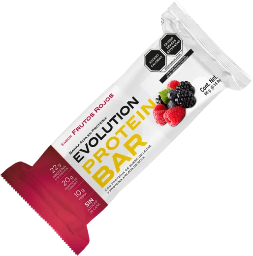
EvolutionEvolution es una marca mexicana de nutrición deportiva. Su barra de 65 g tiene 22 g de proteína, igual que FIBO, y cuesta 30% menos por gramo.
En el anaquel de 7-Eleven se decide la mayor parte de la compra. FIBO promedia $51 y Wild Protein unos $36.
Las barras premium cuestan entre $33 y $42 por cada 10 g de proteína. David y no cow superan los $45.
El benchmark obligó a corregir cuatro datos de la comparación anterior.
Para que el argumento funcione, hacen falta dos cosas: ordenar el precio por canal y explicarlo en el anaquel.
Benchmark · 7 marcas
Los mismos criterios para todas
Lo que se revisó
La conclusión
FIBO hoy
«22 gramos de proteína»
…y todavía no tiene su idea.
El feed de la competencia · toca cada historia
Habla a
Tono
Territorio
Personalidad
Visual
Territorio ocupado.
Diferenciador
Lo respalda
!
Y FIBO, ¿qué tiene en su perfil?
Mismos criterios, aplicados a FIBO hoy.
Los territorios ya tienen dueño
FIBO no puede pelear ninguno
Pero hay un espacio que nadie ocupa
ParaLa vida diaria tapatía
DóndeGuadalajara, Jal.
La barra que llena en el día a día.
TerritorioDisponible
ConceptoCon FIBO te encuentras
ValorMás proteína por tu dinero
Territorio disponible.
La barra que llena en el día a día de Guadalajara
Con FIBO te encuentras
iSolo se sostiene si la barra cumple en sabor y textura.
Primero investigamos qué promociones y activaciones han hecho los competidores. Todo lo que FIBO propone ya está comprobado en el mercado.
Promociones reales de la competencia en México y del mundo. Filtra por tipo y abre la fuente de cada una.
Quién hace qué
Cada una responde a un hallazgo de la investigación y se puede medir.
01 · Punto de venta
Material en el anaquel de 7-Eleven: colgante, cintillo y precio por gramo junto a la barra.
En el anaquel se decide la mayor parte de la compra, y hoy ninguna tienda tiene material propio de FIBO. El consumidor ve $15 de diferencia contra Wild sin explicación.
02 · Exhibidor
Exhibidor de piso y de caja con los cuatro sabores, para tiendas con más rotación, gimnasios y universidades.
Wild Protein ya tiene exhibidor propio en caja. Ahí se compra por impulso.
03 · Sampling
Stand de prueba en universidades, la Vía RecreActiva y carreras, con cupón para comprarla en el 7-Eleven más cercano.
FIBO solo se sostiene si la barra cumple en sabor y textura. La prueba vence la duda, y el cupón la convierte en compra.
04 · Creadores y UGC
Creadores tapatíos y clientes que graban sus momentos con FIBO: el trayecto, la clase, la jornada, el domingo.
Ninguna marca habla de la vida cotidiana de la ciudad: todas muestran el producto o el gimnasio. Ese espacio está libre.
05 · Mapa «te encuentras»
Campaña local con piezas en lugares reales de la ciudad, que lleva al 7-Eleven más cercano.
Ninguna marca es tapatía. Hablar de lugares que todos reconocen hace a FIBO de aquí y convierte «Con FIBO te encuentras» en algo literal.
06 · Precio y e-commerce
Precio coherente por canal, paquetes en fibo.mx y Amazon alineado con la tienda propia.
En Amazon FIBO cuesta 44% más que en su tienda y queda junto a Quest y Barebells. Con el precio en orden, «más proteína por tu dinero» se sostiene en todos los canales.
Tácticas revisadas
0Cada activación la usa al menos un competidor en México o en el mundo.
Tiendas 7-Eleven con FIBO
El anaquel de 7-Eleven es el canal que más creció. Ahí FIBO ya está y solo le falta explicarse.
La barra que llena en el día a día de Guadalajara. Ninguna marca es tapatía ni habla de la ciudad.
Cada acción con su indicador
Ningún objetivo se da por cumplido sin evidencia: cada activación lleva un cupón, un código o una tienda que medir.
Cómo ayuda a las metas
Escenario de inversión externa recomendado: $19,000 MXN más producto para activaciones, sujeto a aprobación.
Síntesis
La categoría crece y la proteína ya es parte del día a día, pero el anaquel está lleno de marcas que prometen sabor, etiqueta limpia o precio bajo. El espacio de FIBO no está en tener más proteína.
Conclusión
A partir de aquí, la estrategia de marca debe responder cuatro preguntas.
Bloque 4Diagnóstico y estrategia de marca
Ya se analizó el negocio, el producto, el mercado, la competencia y al consumidor. Ahora toca decidir qué es FIBO, para quién, qué promete y cómo se diferencia.
Diagnóstico
Donde gana
Esa base es difícil de construir.
Donde pierde
Del producto ▾
Ninguno es definitivo, pero hay que resolverlo.
En una frase
No parte de cero
Arrastra las notas
Reconocimiento
Comunicación
Comunidad
0
Exhibición
Lo que hace falta
Hoy conviven piezas que no se hablan entre sí. Desplázate y mira cómo se ordenan.
Las siguientes láminas responden
Análisis FODA
Toca un cuadrante para abrirlo
Lo que dice el FODA en conjunto
Problema central
De todos los hallazgos se desprende uno solo, que explica casi todos los demás: la marca no se gestiona, y lo que ve el consumidor no refleja la nueva dirección.
Cada área resuelve su parte
La barra «se produce cuando la piden». No hay un responsable que cuide cómo se ve, dónde está, a qué precio se vende ni qué se dice de ella.
Cuatro causas
El reto del relanzamiento
La respuesta no es una campaña. Es un cambio en la forma de gestionar la marca.
Barra alta
En proteína
Cookies & Cream
Abre. Come. Sigue.
Sin preparar nada.
Hecha para el ritmo de quien entrena, trabaja y no se detiene.
De proteína en cada barra.
Entrena. Come. Repite.
Elige el tuyo //
pasa el cursor por cada barra
Sabor cookies & cream.
22 g de proteína · 65 g
Sabor chocolate.
22 g de proteína · 65 g
Sabor frutos rojos.
22 g de proteína · 65 g
Con chocolate oscuro, sin azúcar de caña.
22 g de proteína · 65 g
Pasa el cursor por el río de barras //
Entreno + Proteína + Constancia
Como la secuencia de Fibonacci: 1, 1, 2, 3, 5, 8… cada paso se construye sobre el que diste antes.